background-image: url(resources/images/trump_60.jpg) # More than Words: ## How Political Rhetoric Shapes<br>Voters' Affect and Evaluation <br><br><br><br> <span class="today"></span> <br><br> Dean Knox .tiny.highlight[**Princeton**] <br> Christopher Lucas .tiny.highlight[**WashU**] --- class: center, middle, inverse # Political rhetoric shapes # voter perceptions. --- <video class="media" preload="auto" autoplay onclick="this.play();" style="position: absolute; left: -20%; top: -2.5%; height: 105%;"> <source src="resources/videos/obama_intro.mp4" type="video/mp4"/> Your browser does not support the video tag. </video> --- class: center, middle, inverse # But how? --- # Roadmap 1. **Intro:** quantifying rhetoric in text & audio -- 1. **Design:** studying persuasiveness in rhetoric -- 1. **`ffgrep`:** discovering catchphrases in text corpora -- 1. **The experiment:** CL TODO --- class: center, middle, inverse # What is rhetoric? --- # Persuasion for Dummies - Establish credibility in the eyes of the listener -- - Be perceived as wise, moral, strong, or inspirational -- - Appeal to the listener's emotions -- - Induce feelings of anger, fear, hope, pride -- - Use logical reasoning to advance an argument --- class: center, middle, inverse background-color: black 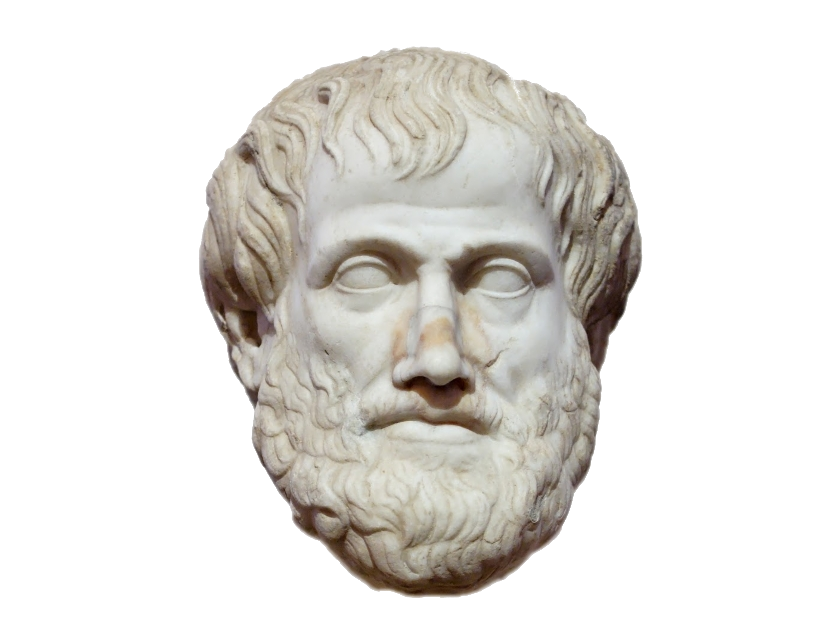 -- <p style="position: absolute; top: 35%; left: 35%; width: 60%; text-align: left;"> <!-- <i> --> "Of the modes of persuasion <br>furnished by the spoken word there are three kinds. The first kind depends on the <u>personal character of the speaker</u>; the second on <u>putting the audience into a certain frame of mind</u>; the third on the proof, or apparent proof, provided by <u>the words of the speech</u> itself." <!-- </i> --> </p> -- <p style="position: absolute; top: 85%; right: 10%; width: 80%; text-align: right;">Aristotle, <i>Rhetoric</i></p> --- # Persuasion for Dummies - Establish credibility in the eyes of the listener - Be perceived as wise, moral, strong, or inspirational - Appeal to the listener's emotions - Induce feelings of anger, fear, hope, pride - Use logical reasoning to advance an argument -- - Just kidding --- <img src="resources/images/anes.png" style="position: absolute; left: 20%; width: 60%; top: -5%;"/> --- class: center, middle, inverse # Where is the # persuasion? --- # Where is the persuasion? <table class='gmisc_table' style='border-collapse: collapse; margin-top: 1em; margin-bottom: 1em; position: absolute; left: 25%; top: 35%' > <tbody> <tr style='border-top: 2px solid grey;'> <td style='border-top: 2px solid grey; text-align: center; width: 25%;'>about</td> <td style='border-top: 2px solid grey; text-align: center; width: 10%;'>1</td> <td style='border-top: 2px solid grey; text-align: center; width: 25%;'>creator</td> <td style='border-top: 2px solid grey; text-align: center; width: 10%;'>1</td> <td style='border-top: 2px solid grey; text-align: center; width: 25%;'>that's</td> <td style='border-top: 2px solid grey; text-align: center; width: 10%;'>2</td> </tr> <tr> <td style='text-align: center;'>americans</td> <td style='text-align: center;'>1</td> <td style='text-align: center;'>endowed</td> <td style='text-align: center;'>1</td> <td style='text-align: center;'>this</td> <td style='text-align: center;'>1</td> </tr> <tr> <td style='text-align: center;'>are</td> <td style='text-align: center;'>2</td> <td style='text-align: center;'>inalienable</td> <td style='text-align: center;'>1</td> <td style='text-align: center;'>we</td> <td style='text-align: center;'>3</td> </tr> <tr> <td style='text-align: center;'>as</td> <td style='text-align: center;'>1</td> <td style='text-align: center;'>is</td> <td style='text-align: center;'>1</td> <td style='text-align: center;'>what</td> <td style='text-align: center;'>2</td> </tr> <tr> <td style='text-align: center;'>believe</td> <td style='text-align: center;'>1</td> <td style='text-align: center;'>know</td> <td style='text-align: center;'>1</td> <td style='text-align: center;'>who</td> <td style='text-align: center;'>1</td> </tr> <tr> <td style='text-align: center;'>by</td> <td style='text-align: center;'>1</td> <td style='text-align: center;'>not</td> <td style='text-align: center;'>2</td> <td style='text-align: center;'>with</td> <td style='text-align: center;'>1</td> </tr> <tr> <td style='text-align: center;'>certain</td> <td style='text-align: center;'>1</td> <td style='text-align: center;'>our</td> <td style='text-align: center;'>1</td> <td style='text-align: center;'>you</td> <td style='text-align: center;'>1</td> </tr> <tr> <td style='border-bottom: 2px solid grey; text-align: center;'>country</td> <td style='border-bottom: 2px solid grey; text-align: center;'>1</td> <td style='border-bottom: 2px solid grey; text-align: center;'>rights</td> <td style='border-bottom: 2px solid grey; text-align: center;'>1</td> <td style='border-bottom: 2px solid grey; text-align: center;'></td> <td style='border-bottom: 2px solid grey; text-align: center;'></td> </tr> </tbody> </table> --- # Where is the persuasion? -- 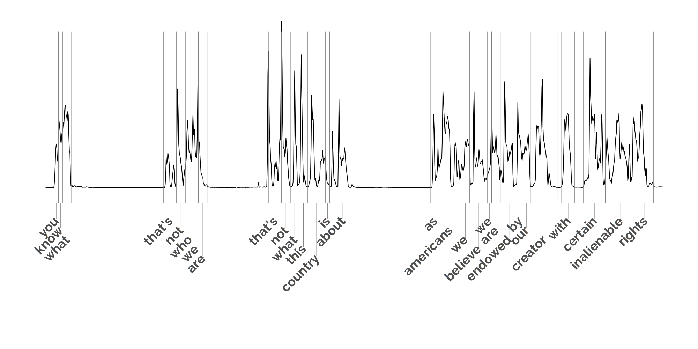 --- # Where is the persuasion? -- 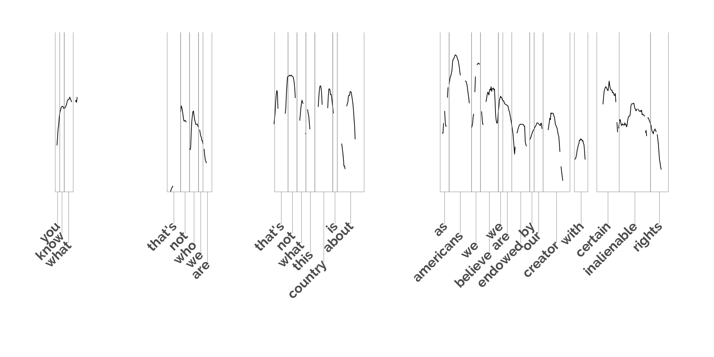 --- 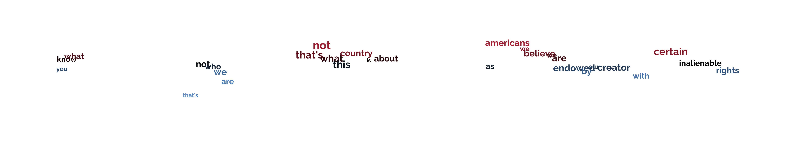 --- --- --- # The ideal experiment -- - Candidates are already trying to optimize speech -- - Work with a candidate on A/B tests of messaging -- - Manipulate not only content, but delivery --- 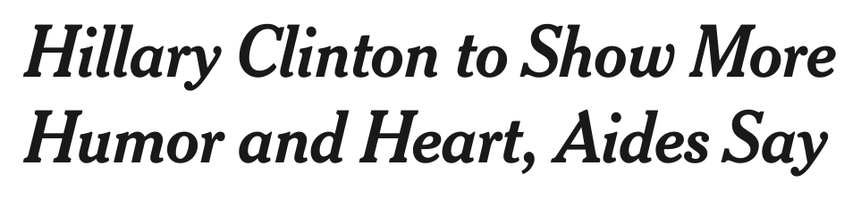 --- # The ideal experiment - Candidates are already trying to optimize speech - Work with a candidate on A/B tests of messaging - Manipulate not only content, but delivery -- - Expose small groups of voters to random message -- - But we don't have candidates. The next best thing: -- - Find instances when candidate repeats common phrase -- - Then, find instances when phrase spoken in different tone --- class: center, middle, inverse # Discovering # catchphrases --- # The data - 100 campaign speechs from 2012 presidential race - Cut videos to single-speaker speech - Transcribe audio with Google Speech API - On average, 3,000 words over 20 minutes each --- <table class='gmisc_table' style='border-collapse: collapse; margin-top: 1em; margin-bottom: 1em; position: absolute; left: 2.5%; width: 95%; top: 20%' > <thead> <tr> <th style='border-bottom: 1px solid grey; border-top: 2px solid grey; text-align: left;'>Speaker</th> <th style='border-bottom: 1px solid grey; border-top: 2px solid grey; text-align: left;'>Date</th> <th style='border-bottom: 1px solid grey; border-top: 2px solid grey; text-align: left;'>Location</th> <th style='border-bottom: 1px solid grey; border-top: 2px solid grey; text-align: left;'>Transcript</th> </tr> </thead> <tbody> <tr> <td style='text-align: left;'>Barack Obama</td> <td style='text-align: left;'>2012-04-28</td> <td style='text-align: left;'>Washington, DC</td> <td style='text-align: left;'>good evening everybody good evening i could not be more thrilled to be here tonight at the white house correspondents... </td> </tr> <tr> <td style='text-align: left;'>Barack Obama</td> <td style='text-align: left;'>2012-06-22</td> <td style='text-align: left;'>Orange Cty., FL</td> <td style='text-align: left;'>thank you thank you gracias thank you so much thank you thank you thank you everybody please have a seat it is good to be...</td> </tr> <tr> <td style='text-align: left;'>Barack Obama</td> <td style='text-align: left;'>2012-06-22</td> <td style='text-align: left;'>Tampa,<br>FL</td> <td style='text-align: left;'>hows everybody doing today couple people i want to acknowledge first of all the outstanding mayor of your fair city...</td> </tr> <tr> <td style='text-align: left;'>Barack Obama</td> <td style='text-align: left;'>2012-06-28</td> <td style='text-align: left;'>Washington, DC</td> <td style='text-align: left;'>good afternoon earlier today the supreme court upheld the constitutionality of the affordable care act the name of the...</td> </tr> <tr> <td style='text-align: left;'>Barack Obama</td> <td style='text-align: left;'>2012-09-06</td> <td style='text-align: left;'>Portsmouth, NH</td> <td style='text-align: left;'>thank you thank you thank you thank you so much thank you thank you so much thank you very much everyone thank you...</td> </tr> <tr> <td style='border-bottom: 2px solid grey; text-align: center;'>⋮</td> <td style='border-bottom: 2px solid grey; text-align: center;'>⋮</td> <td style='border-bottom: 2px solid grey; text-align: center;'>⋮</td> <td style='border-bottom: 2px solid grey; text-align: center;'>⋮</td> </tr> </tbody> </table> --- <table class='gmisc_table' style='border-collapse: collapse; margin-top: 1em; margin-bottom: 1em; position: absolute; left: 2.5%; width: 95%; top: 20%' > <thead> <tr> <th style='border-bottom: 1px solid grey; border-top: 2px solid grey; text-align: left;'>Speaker</th> <th style='border-bottom: 1px solid grey; border-top: 2px solid grey; text-align: left;'>Date</th> <th style='border-bottom: 1px solid grey; border-top: 2px solid grey; text-align: left;'>Location</th> <th style='border-bottom: 1px solid grey; border-top: 2px solid grey; text-align: left;'>Transcript</th> </tr> </thead> <tbody> <tr> <td style='text-align: left;'>Barack Obama</td> <td style='text-align: left;'>2012-04-28</td> <td style='text-align: left;'>Washington, DC</td> <td style='text-align: left;'><mark style="background-color: #C3384B">good evening everybody good evening</mark> i could not be more thrilled to be here tonight at the white house correspondents... </td> </tr> <tr> <td style='text-align: left;'>Barack Obama</td> <td style='text-align: left;'>2012-06-22</td> <td style='text-align: left;'>Orange Cty., FL</td> <td style='text-align: left;'>thank you thank you gracias thank you so much thank you thank you thank you everybody please have a seat it is good to be...</td> </tr> <tr> <td style='text-align: left;'>Barack Obama</td> <td style='text-align: left;'>2012-06-22</td> <td style='text-align: left;'>Tampa,<br>FL</td> <td style='text-align: left;'>hows everybody doing today couple people i want to acknowledge first of all the outstanding mayor of your fair city...</td> </tr> <tr> <td style='text-align: left;'>Barack Obama</td> <td style='text-align: left;'>2012-06-28</td> <td style='text-align: left;'>Washington, DC</td> <td style='text-align: left;'>good afternoon earlier today the supreme court upheld the constitutionality of the affordable care act the name of the...</td> </tr> <tr> <td style='text-align: left;'>Barack Obama</td> <td style='text-align: left;'>2012-09-06</td> <td style='text-align: left;'>Portsmouth, NH</td> <td style='text-align: left;'>thank you thank you thank you thank you so much thank you thank you so much thank you very much everyone thank you...</td> </tr> <tr> <td style='border-bottom: 2px solid grey; text-align: center;'>⋮</td> <td style='border-bottom: 2px solid grey; text-align: center;'>⋮</td> <td style='border-bottom: 2px solid grey; text-align: center;'>⋮</td> <td style='border-bottom: 2px solid grey; text-align: center;'>⋮</td> </tr> </tbody> </table> --- <table class='gmisc_table' style='border-collapse: collapse; margin-top: 1em; margin-bottom: 1em; position: absolute; left: 2.5%; width: 95%; top: 20%' > <thead> <tr> <th style='border-bottom: 1px solid grey; border-top: 2px solid grey; text-align: left;'>Speaker</th> <th style='border-bottom: 1px solid grey; border-top: 2px solid grey; text-align: left;'>Date</th> <th style='border-bottom: 1px solid grey; border-top: 2px solid grey; text-align: left;'>Location</th> <th style='border-bottom: 1px solid grey; border-top: 2px solid grey; text-align: left;'>Transcript</th> </tr> </thead> <tbody> <tr> <td style='text-align: left;'>Barack Obama</td> <td style='text-align: left;'>2012-04-28</td> <td style='text-align: left;'>Washington, DC</td> <td style='text-align: left;'><mark style="background-color: #C3384B">good evening everybody good evening</mark> i could not be more thrilled to be here tonight at the white house correspondents... </td> </tr> <tr> <td style='text-align: left;'>Barack Obama</td> <td style='text-align: left;'>2012-06-22</td> <td style='text-align: left;'>Orange Cty., FL</td> <td style='text-align: left;'><mark style="background-color: #4E84C4">thank you thank you gracias</mark> thank you so much thank you thank you thank you everybody please have a seat it is good to be...</td> </tr> <tr> <td style='text-align: left;'>Barack Obama</td> <td style='text-align: left;'>2012-06-22</td> <td style='text-align: left;'>Tampa,<br>FL</td> <td style='text-align: left;'>hows everybody doing today couple people i want to acknowledge first of all the outstanding mayor of your fair city...</td> </tr> <tr> <td style='text-align: left;'>Barack Obama</td> <td style='text-align: left;'>2012-06-28</td> <td style='text-align: left;'>Washington, DC</td> <td style='text-align: left;'>good afternoon earlier today the supreme court upheld the constitutionality of the affordable care act the name of the...</td> </tr> <tr> <td style='text-align: left;'>Barack Obama</td> <td style='text-align: left;'>2012-09-06</td> <td style='text-align: left;'>Portsmouth, NH</td> <td style='text-align: left;'>thank you thank you thank you thank you so much thank you thank you so much thank you very much everyone thank you...</td> </tr> <tr> <td style='border-bottom: 2px solid grey; text-align: center;'>⋮</td> <td style='border-bottom: 2px solid grey; text-align: center;'>⋮</td> <td style='border-bottom: 2px solid grey; text-align: center;'>⋮</td> <td style='border-bottom: 2px solid grey; text-align: center;'>⋮</td> </tr> </tbody> </table> --- <table class='gmisc_table' style='border-collapse: collapse; margin-top: 1em; margin-bottom: 1em; position: absolute; left: 2.5%; width: 95%; top: 20%' > <thead> <tr> <th style='border-bottom: 1px solid grey; border-top: 2px solid grey; text-align: left;'>Speaker</th> <th style='border-bottom: 1px solid grey; border-top: 2px solid grey; text-align: left;'>Date</th> <th style='border-bottom: 1px solid grey; border-top: 2px solid grey; text-align: left;'>Location</th> <th style='border-bottom: 1px solid grey; border-top: 2px solid grey; text-align: left;'>Transcript</th> </tr> </thead> <tbody> <tr> <td style='text-align: left;'>Barack Obama</td> <td style='text-align: left;'>2012-04-28</td> <td style='text-align: left;'>Washington, DC</td> <td style='text-align: left;'><mark style="background-color: #C3384B">good evening everybody good evening</mark> i could not be more thrilled to be here tonight at the white house correspondents... </td> </tr> <tr> <td style='text-align: left;'>Barack Obama</td> <td style='text-align: left;'>2012-06-22</td> <td style='text-align: left;'>Orange Cty., FL</td> <td style='text-align: left;'>thank <mark style="background-color: #4E84C4">you thank you gracias thank</mark> you so much thank you thank you thank you everybody please have a seat it is good to be...</td> </tr> <tr> <td style='text-align: left;'>Barack Obama</td> <td style='text-align: left;'>2012-06-22</td> <td style='text-align: left;'>Tampa,<br>FL</td> <td style='text-align: left;'>hows everybody doing today couple people i want to acknowledge first of all the outstanding mayor of your fair city...</td> </tr> <tr> <td style='text-align: left;'>Barack Obama</td> <td style='text-align: left;'>2012-06-28</td> <td style='text-align: left;'>Washington, DC</td> <td style='text-align: left;'>good afternoon earlier today the supreme court upheld the constitutionality of the affordable care act the name of the...</td> </tr> <tr> <td style='text-align: left;'>Barack Obama</td> <td style='text-align: left;'>2012-09-06</td> <td style='text-align: left;'>Portsmouth, NH</td> <td style='text-align: left;'>thank you thank you thank you thank you so much thank you thank you so much thank you very much everyone thank you...</td> </tr> <tr> <td style='border-bottom: 2px solid grey; text-align: center;'>⋮</td> <td style='border-bottom: 2px solid grey; text-align: center;'>⋮</td> <td style='border-bottom: 2px solid grey; text-align: center;'>⋮</td> <td style='border-bottom: 2px solid grey; text-align: center;'>⋮</td> </tr> </tbody> </table> --- <table class='gmisc_table' style='border-collapse: collapse; margin-top: 1em; margin-bottom: 1em; position: absolute; left: 2.5%; width: 95%; top: 20%' > <thead> <tr> <th style='border-bottom: 1px solid grey; border-top: 2px solid grey; text-align: left;'>Speaker</th> <th style='border-bottom: 1px solid grey; border-top: 2px solid grey; text-align: left;'>Date</th> <th style='border-bottom: 1px solid grey; border-top: 2px solid grey; text-align: left;'>Location</th> <th style='border-bottom: 1px solid grey; border-top: 2px solid grey; text-align: left;'>Transcript</th> </tr> </thead> <tbody> <tr> <td style='text-align: left;'>Barack Obama</td> <td style='text-align: left;'>2012-04-28</td> <td style='text-align: left;'>Washington, DC</td> <td style='text-align: left;'><mark style="background-color: #C3384B">good evening everybody good evening</mark> i could not be more thrilled to be here tonight at the white house correspondents... </td> </tr> <tr> <td style='text-align: left;'>Barack Obama</td> <td style='text-align: left;'>2012-06-22</td> <td style='text-align: left;'>Orange Cty., FL</td> <td style='text-align: left;'>thank you <mark style="background-color: #4E84C4">thank you gracias thank you</mark> so much thank you thank you thank you everybody please have a seat it is good to be...</td> </tr> <tr> <td style='text-align: left;'>Barack Obama</td> <td style='text-align: left;'>2012-06-22</td> <td style='text-align: left;'>Tampa,<br>FL</td> <td style='text-align: left;'>hows everybody doing today couple people i want to acknowledge first of all the outstanding mayor of your fair city...</td> </tr> <tr> <td style='text-align: left;'>Barack Obama</td> <td style='text-align: left;'>2012-06-28</td> <td style='text-align: left;'>Washington, DC</td> <td style='text-align: left;'>good afternoon earlier today the supreme court upheld the constitutionality of the affordable care act the name of the...</td> </tr> <tr> <td style='text-align: left;'>Barack Obama</td> <td style='text-align: left;'>2012-09-06</td> <td style='text-align: left;'>Portsmouth, NH</td> <td style='text-align: left;'>thank you thank you thank you thank you so much thank you thank you so much thank you very much everyone thank you...</td> </tr> <tr> <td style='border-bottom: 2px solid grey; text-align: center;'>⋮</td> <td style='border-bottom: 2px solid grey; text-align: center;'>⋮</td> <td style='border-bottom: 2px solid grey; text-align: center;'>⋮</td> <td style='border-bottom: 2px solid grey; text-align: center;'>⋮</td> </tr> </tbody> </table> --- <table class='gmisc_table' style='border-collapse: collapse; margin-top: 1em; margin-bottom: 1em; position: absolute; left: 2.5%; width: 95%; top: 20%' > <thead> <tr> <th style='border-bottom: 1px solid grey; border-top: 2px solid grey; text-align: left;'>Speaker</th> <th style='border-bottom: 1px solid grey; border-top: 2px solid grey; text-align: left;'>Date</th> <th style='border-bottom: 1px solid grey; border-top: 2px solid grey; text-align: left;'>Location</th> <th style='border-bottom: 1px solid grey; border-top: 2px solid grey; text-align: left;'>Transcript</th> </tr> </thead> <tbody> <tr> <td style='text-align: left;'>Barack Obama</td> <td style='text-align: left;'>2012-04-28</td> <td style='text-align: left;'>Washington, DC</td> <td style='text-align: left;'><mark style="background-color: #C3384B">good evening everybody good evening</mark> i could not be more thrilled to be here tonight at the white house correspondents... </td> </tr> <tr> <td style='text-align: left;'>Barack Obama</td> <td style='text-align: left;'>2012-06-22</td> <td style='text-align: left;'>Orange Cty., FL</td> <td style='text-align: left;'>thank you thank <mark style="background-color: #4E84C4">you gracias thank you so</mark> much thank you thank you thank you everybody please have a seat it is good to be...</td> </tr> <tr> <td style='text-align: left;'>Barack Obama</td> <td style='text-align: left;'>2012-06-22</td> <td style='text-align: left;'>Tampa,<br>FL</td> <td style='text-align: left;'>hows everybody doing today couple people i want to acknowledge first of all the outstanding mayor of your fair city...</td> </tr> <tr> <td style='text-align: left;'>Barack Obama</td> <td style='text-align: left;'>2012-06-28</td> <td style='text-align: left;'>Washington, DC</td> <td style='text-align: left;'>good afternoon earlier today the supreme court upheld the constitutionality of the affordable care act the name of the...</td> </tr> <tr> <td style='text-align: left;'>Barack Obama</td> <td style='text-align: left;'>2012-09-06</td> <td style='text-align: left;'>Portsmouth, NH</td> <td style='text-align: left;'>thank you thank you thank you thank you so much thank you thank you so much thank you very much everyone thank you...</td> </tr> <tr> <td style='border-bottom: 2px solid grey; text-align: center;'>⋮</td> <td style='border-bottom: 2px solid grey; text-align: center;'>⋮</td> <td style='border-bottom: 2px solid grey; text-align: center;'>⋮</td> <td style='border-bottom: 2px solid grey; text-align: center;'>⋮</td> </tr> </tbody> </table> --- <table class='gmisc_table' style='border-collapse: collapse; margin-top: 1em; margin-bottom: 1em; position: absolute; left: 2.5%; width: 95%; top: 20%' > <thead> <tr> <th style='border-bottom: 1px solid grey; border-top: 2px solid grey; text-align: left;'>Speaker</th> <th style='border-bottom: 1px solid grey; border-top: 2px solid grey; text-align: left;'>Date</th> <th style='border-bottom: 1px solid grey; border-top: 2px solid grey; text-align: left;'>Location</th> <th style='border-bottom: 1px solid grey; border-top: 2px solid grey; text-align: left;'>Transcript</th> </tr> </thead> <tbody> <tr> <td style='text-align: left;'>Barack Obama</td> <td style='text-align: left;'>2012-04-28</td> <td style='text-align: left;'>Washington, DC</td> <td style='text-align: left;'><mark style="background-color: #C3384B">good evening everybody good evening</mark> i could not be more thrilled to be here tonight at the white house correspondents... </td> </tr> <tr> <td style='text-align: left;'>Barack Obama</td> <td style='text-align: left;'>2012-06-22</td> <td style='text-align: left;'>Orange Cty., FL</td> <td style='text-align: left;'>thank you thank you <mark style="background-color: #4E84C4">gracias thank you so much</mark> thank you thank you thank you everybody please have a seat it is good to be...</td> </tr> <tr> <td style='text-align: left;'>Barack Obama</td> <td style='text-align: left;'>2012-06-22</td> <td style='text-align: left;'>Tampa,<br>FL</td> <td style='text-align: left;'>hows everybody doing today couple people i want to acknowledge first of all the outstanding mayor of your fair city...</td> </tr> <tr> <td style='text-align: left;'>Barack Obama</td> <td style='text-align: left;'>2012-06-28</td> <td style='text-align: left;'>Washington, DC</td> <td style='text-align: left;'>good afternoon earlier today the supreme court upheld the constitutionality of the affordable care act the name of the...</td> </tr> <tr> <td style='text-align: left;'>Barack Obama</td> <td style='text-align: left;'>2012-09-06</td> <td style='text-align: left;'>Portsmouth, NH</td> <td style='text-align: left;'>thank you thank you thank you thank you so much thank you thank you so much thank you very much everyone thank you...</td> </tr> <tr> <td style='border-bottom: 2px solid grey; text-align: center;'>⋮</td> <td style='border-bottom: 2px solid grey; text-align: center;'>⋮</td> <td style='border-bottom: 2px solid grey; text-align: center;'>⋮</td> <td style='border-bottom: 2px solid grey; text-align: center;'>⋮</td> </tr> </tbody> </table> --- <table class='gmisc_table' style='border-collapse: collapse; margin-top: 1em; margin-bottom: 1em; position: absolute; left: 2.5%; width: 95%; top: 20%' > <thead> <tr> <th style='border-bottom: 1px solid grey; border-top: 2px solid grey; text-align: left;'>Speaker</th> <th style='border-bottom: 1px solid grey; border-top: 2px solid grey; text-align: left;'>Date</th> <th style='border-bottom: 1px solid grey; border-top: 2px solid grey; text-align: left;'>Location</th> <th style='border-bottom: 1px solid grey; border-top: 2px solid grey; text-align: left;'>Transcript</th> </tr> </thead> <tbody> <tr> <td style='text-align: left;'>Barack Obama</td> <td style='text-align: left;'>2012-04-28</td> <td style='text-align: left;'>Washington, DC</td> <td style='text-align: left;'><mark style="background-color: #C3384B">good evening everybody good evening</mark> i could not be more thrilled to be here tonight at the white house correspondents... </td> </tr> <tr> <td style='text-align: left;'>Barack Obama</td> <td style='text-align: left;'>2012-06-22</td> <td style='text-align: left;'>Orange Cty., FL</td> <td style='text-align: left;'>thank you thank you gracias thank you so much thank you thank you thank you everybody please have a seat it is good to be...</td> </tr> <tr> <td style='text-align: left;'>Barack Obama</td> <td style='text-align: left;'>2012-06-22</td> <td style='text-align: left;'>Tampa,<br>FL</td> <td style='text-align: left;'><mark style="background-color: #4E84C4">hows everybody doing today couple</mark> people i want to acknowledge first of all the outstanding mayor of your fair city...</td> </tr> <tr> <td style='text-align: left;'>Barack Obama</td> <td style='text-align: left;'>2012-06-28</td> <td style='text-align: left;'>Washington, DC</td> <td style='text-align: left;'>good afternoon earlier today the supreme court upheld the constitutionality of the affordable care act the name of the...</td> </tr> <tr> <td style='text-align: left;'>Barack Obama</td> <td style='text-align: left;'>2012-09-06</td> <td style='text-align: left;'>Portsmouth, NH</td> <td style='text-align: left;'>thank you thank you thank you thank you so much thank you thank you so much thank you very much everyone thank you...</td> </tr> <tr> <td style='border-bottom: 2px solid grey; text-align: center;'>⋮</td> <td style='border-bottom: 2px solid grey; text-align: center;'>⋮</td> <td style='border-bottom: 2px solid grey; text-align: center;'>⋮</td> <td style='border-bottom: 2px solid grey; text-align: center;'>⋮</td> </tr> </tbody> </table> --- <table class='gmisc_table' style='border-collapse: collapse; margin-top: 1em; margin-bottom: 1em; position: absolute; left: 2.5%; width: 95%; top: 20%' > <thead> <tr> <th style='border-bottom: 1px solid grey; border-top: 2px solid grey; text-align: left;'>Speaker</th> <th style='border-bottom: 1px solid grey; border-top: 2px solid grey; text-align: left;'>Date</th> <th style='border-bottom: 1px solid grey; border-top: 2px solid grey; text-align: left;'>Location</th> <th style='border-bottom: 1px solid grey; border-top: 2px solid grey; text-align: left;'>Transcript</th> </tr> </thead> <tbody> <tr> <td style='text-align: left;'>Barack Obama</td> <td style='text-align: left;'>2012-04-28</td> <td style='text-align: left;'>Washington, DC</td> <td style='text-align: left;'><mark style="background-color: #C3384B">good evening everybody good evening</mark> i could not be more thrilled to be here tonight at the white house correspondents... </td> </tr> <tr> <td style='text-align: left;'>Barack Obama</td> <td style='text-align: left;'>2012-06-22</td> <td style='text-align: left;'>Orange Cty., FL</td> <td style='text-align: left;'>thank you thank you gracias thank you so much thank you thank you thank you everybody please have a seat it is good to be...</td> </tr> <tr> <td style='text-align: left;'>Barack Obama</td> <td style='text-align: left;'>2012-06-22</td> <td style='text-align: left;'>Tampa,<br>FL</td> <td style='text-align: left;'>hows <mark style="background-color: #4E84C4">everybody doing today couple people</mark> i want to acknowledge first of all the outstanding mayor of your fair city...</td> </tr> <tr> <td style='text-align: left;'>Barack Obama</td> <td style='text-align: left;'>2012-06-28</td> <td style='text-align: left;'>Washington, DC</td> <td style='text-align: left;'>good afternoon earlier today the supreme court upheld the constitutionality of the affordable care act the name of the...</td> </tr> <tr> <td style='text-align: left;'>Barack Obama</td> <td style='text-align: left;'>2012-09-06</td> <td style='text-align: left;'>Portsmouth, NH</td> <td style='text-align: left;'>thank you thank you thank you thank you so much thank you thank you so much thank you very much everyone thank you...</td> </tr> <tr> <td style='border-bottom: 2px solid grey; text-align: center;'>⋮</td> <td style='border-bottom: 2px solid grey; text-align: center;'>⋮</td> <td style='border-bottom: 2px solid grey; text-align: center;'>⋮</td> <td style='border-bottom: 2px solid grey; text-align: center;'>⋮</td> </tr> </tbody> </table> --- <table class='gmisc_table' style='border-collapse: collapse; margin-top: 1em; margin-bottom: 1em; position: absolute; left: 2.5%; width: 95%; top: 20%' > <thead> <tr> <th style='border-bottom: 1px solid grey; border-top: 2px solid grey; text-align: left;'>Speaker</th> <th style='border-bottom: 1px solid grey; border-top: 2px solid grey; text-align: left;'>Date</th> <th style='border-bottom: 1px solid grey; border-top: 2px solid grey; text-align: left;'>Location</th> <th style='border-bottom: 1px solid grey; border-top: 2px solid grey; text-align: left;'>Transcript</th> </tr> </thead> <tbody> <tr> <td style='text-align: left;'>Barack Obama</td> <td style='text-align: left;'>2012-04-28</td> <td style='text-align: left;'>Washington, DC</td> <td style='text-align: left;'><mark style="background-color: #C3384B">good evening everybody good evening</mark> i could not be more thrilled to be here tonight at the white house correspondents... </td> </tr> <tr> <td style='text-align: left;'>Barack Obama</td> <td style='text-align: left;'>2012-06-22</td> <td style='text-align: left;'>Orange Cty., FL</td> <td style='text-align: left;'>thank you thank you gracias thank you so much thank you thank you thank you everybody please have a seat it is good to be...</td> </tr> <tr> <td style='text-align: left;'>Barack Obama</td> <td style='text-align: left;'>2012-06-22</td> <td style='text-align: left;'>Tampa,<br>FL</td> <td style='text-align: left;'>hows everybody <mark style="background-color: #4E84C4">doing today couple people i</mark> want to acknowledge first of all the outstanding mayor of your fair city...</td> </tr> <tr> <td style='text-align: left;'>Barack Obama</td> <td style='text-align: left;'>2012-06-28</td> <td style='text-align: left;'>Washington, DC</td> <td style='text-align: left;'>good afternoon earlier today the supreme court upheld the constitutionality of the affordable care act the name of the...</td> </tr> <tr> <td style='text-align: left;'>Barack Obama</td> <td style='text-align: left;'>2012-09-06</td> <td style='text-align: left;'>Portsmouth, NH</td> <td style='text-align: left;'>thank you thank you thank you thank you so much thank you thank you so much thank you very much everyone thank you...</td> </tr> <tr> <td style='border-bottom: 2px solid grey; text-align: center;'>⋮</td> <td style='border-bottom: 2px solid grey; text-align: center;'>⋮</td> <td style='border-bottom: 2px solid grey; text-align: center;'>⋮</td> <td style='border-bottom: 2px solid grey; text-align: center;'>⋮</td> </tr> </tbody> </table> --- <table class='gmisc_table' style='border-collapse: collapse; margin-top: 1em; margin-bottom: 1em; position: absolute; left: 2.5%; width: 95%; top: 20%' > <thead> <tr> <th style='border-bottom: 1px solid grey; border-top: 2px solid grey; text-align: left;'>Speaker</th> <th style='border-bottom: 1px solid grey; border-top: 2px solid grey; text-align: left;'>Date</th> <th style='border-bottom: 1px solid grey; border-top: 2px solid grey; text-align: left;'>Location</th> <th style='border-bottom: 1px solid grey; border-top: 2px solid grey; text-align: left;'>Transcript</th> </tr> </thead> <tbody> <tr> <td style='text-align: left;'>Barack Obama</td> <td style='text-align: left;'>2012-04-28</td> <td style='text-align: left;'>Washington, DC</td> <td style='text-align: left;'><mark style="background-color: #C3384B">good evening everybody good evening</mark> i could not be more thrilled to be here tonight at the white house correspondents... </td> </tr> <tr> <td style='text-align: left;'>Barack Obama</td> <td style='text-align: left;'>2012-06-22</td> <td style='text-align: left;'>Orange Cty., FL</td> <td style='text-align: left;'>thank you thank you gracias thank you so much thank you thank you thank you everybody please have a seat it is good to be...</td> </tr> <tr> <td style='text-align: left;'>Barack Obama</td> <td style='text-align: left;'>2012-06-22</td> <td style='text-align: left;'>Tampa,<br>FL</td> <td style='text-align: left;'>hows everybody doing <mark style="background-color: #4E84C4"> today couple people i want</mark> to acknowledge first of all the outstanding mayor of your fair city...</td> </tr> <tr> <td style='text-align: left;'>Barack Obama</td> <td style='text-align: left;'>2012-06-28</td> <td style='text-align: left;'>Washington, DC</td> <td style='text-align: left;'>good afternoon earlier today the supreme court upheld the constitutionality of the affordable care act the name of the...</td> </tr> <tr> <td style='text-align: left;'>Barack Obama</td> <td style='text-align: left;'>2012-09-06</td> <td style='text-align: left;'>Portsmouth, NH</td> <td style='text-align: left;'>thank you thank you thank you thank you so much thank you thank you so much thank you very much everyone thank you...</td> </tr> <tr> <td style='border-bottom: 2px solid grey; text-align: center;'>⋮</td> <td style='border-bottom: 2px solid grey; text-align: center;'>⋮</td> <td style='border-bottom: 2px solid grey; text-align: center;'>⋮</td> <td style='border-bottom: 2px solid grey; text-align: center;'>⋮</td> </tr> </tbody> </table> --- <table class='gmisc_table' style='border-collapse: collapse; margin-top: 1em; margin-bottom: 1em; position: absolute; left: 2.5%; width: 95%; top: 20%' > <thead> <tr> <th style='border-bottom: 1px solid grey; border-top: 2px solid grey; text-align: left;'>Speaker</th> <th style='border-bottom: 1px solid grey; border-top: 2px solid grey; text-align: left;'>Date</th> <th style='border-bottom: 1px solid grey; border-top: 2px solid grey; text-align: left;'>Location</th> <th style='border-bottom: 1px solid grey; border-top: 2px solid grey; text-align: left;'>Transcript</th> </tr> </thead> <tbody> <tr> <td style='text-align: left;'>Barack Obama</td> <td style='text-align: left;'>2012-04-28</td> <td style='text-align: left;'>Washington, DC</td> <td style='text-align: left;'><mark style="background-color: #C3384B">good evening everybody good evening</mark> i could not be more thrilled to be here tonight at the white house correspondents... </td> </tr> <tr> <td style='text-align: left;'>Barack Obama</td> <td style='text-align: left;'>2012-06-22</td> <td style='text-align: left;'>Orange Cty., FL</td> <td style='text-align: left;'>thank you thank you gracias thank you so much thank you thank you thank you everybody please have a seat it is good to be...</td> </tr> <tr> <td style='text-align: left;'>Barack Obama</td> <td style='text-align: left;'>2012-06-22</td> <td style='text-align: left;'>Tampa,<br>FL</td> <td style='text-align: left;'>hows everybody doing today <mark style="background-color: #4E84C4">couple people i want to</mark> acknowledge first of all the outstanding mayor of your fair city...</td> </tr> <tr> <td style='text-align: left;'>Barack Obama</td> <td style='text-align: left;'>2012-06-28</td> <td style='text-align: left;'>Washington, DC</td> <td style='text-align: left;'>good afternoon earlier today the supreme court upheld the constitutionality of the affordable care act the name of the...</td> </tr> <tr> <td style='text-align: left;'>Barack Obama</td> <td style='text-align: left;'>2012-09-06</td> <td style='text-align: left;'>Portsmouth, NH</td> <td style='text-align: left;'>thank you thank you thank you thank you so much thank you thank you so much thank you very much everyone thank you...</td> </tr> <tr> <td style='border-bottom: 2px solid grey; text-align: center;'>⋮</td> <td style='border-bottom: 2px solid grey; text-align: center;'>⋮</td> <td style='border-bottom: 2px solid grey; text-align: center;'>⋮</td> <td style='border-bottom: 2px solid grey; text-align: center;'>⋮</td> </tr> </tbody> </table> --- <table class='gmisc_table' style='border-collapse: collapse; margin-top: 1em; margin-bottom: 1em; position: absolute; left: 2.5%; width: 95%; top: 20%' > <thead> <tr> <th style='border-bottom: 1px solid grey; border-top: 2px solid grey; text-align: left;'>Speaker</th> <th style='border-bottom: 1px solid grey; border-top: 2px solid grey; text-align: left;'>Date</th> <th style='border-bottom: 1px solid grey; border-top: 2px solid grey; text-align: left;'>Location</th> <th style='border-bottom: 1px solid grey; border-top: 2px solid grey; text-align: left;'>Transcript</th> </tr> </thead> <tbody> <tr> <td style='text-align: left;'>Barack Obama</td> <td style='text-align: left;'>2012-04-28</td> <td style='text-align: left;'>Washington, DC</td> <td style='text-align: left;'><mark style="background-color: #C3384B">good evening everybody good evening</mark> i could not be more thrilled to be here tonight at the white house correspondents... </td> </tr> <tr> <td style='text-align: left;'>Barack Obama</td> <td style='text-align: left;'>2012-06-22</td> <td style='text-align: left;'>Orange Cty., FL</td> <td style='text-align: left;'>thank you thank you gracias thank you so much thank you thank you thank you everybody please have a seat it is good to be...</td> </tr> <tr> <td style='text-align: left;'>Barack Obama</td> <td style='text-align: left;'>2012-06-22</td> <td style='text-align: left;'>Tampa,<br>FL</td> <td style='text-align: left;'>hows everybody doing today couple people i want to acknowledge first of all the outstanding mayor of your fair city...</td> </tr> <tr> <td style='text-align: left;'>Barack Obama</td> <td style='text-align: left;'>2012-06-28</td> <td style='text-align: left;'>Washington, DC</td> <td style='text-align: left;'>good afternoon earlier today the supreme court upheld the constitutionality of the affordable care act the name of the...</td> </tr> <tr> <td style='text-align: left;'>Barack Obama</td> <td style='text-align: left;'>2012-09-06</td> <td style='text-align: left;'>Portsmouth, NH</td> <td style='text-align: left;'>thank you thank you thank you thank you so much thank you thank you so much thank you very much everyone thank you...</td> </tr> <tr> <td style='border-bottom: 2px solid grey; text-align: center;'>⋮</td> <td style='border-bottom: 2px solid grey; text-align: center;'>⋮</td> <td style='border-bottom: 2px solid grey; text-align: center;'>⋮</td> <td style='border-bottom: 2px solid grey; text-align: center;'>⋮</td> </tr> </tbody> </table> --- <table class='gmisc_table' style='border-collapse: collapse; margin-top: 1em; margin-bottom: 1em; position: absolute; left: 2.5%; width: 95%; top: 20%' > <thead> <tr> <th style='border-bottom: 1px solid grey; border-top: 2px solid grey; text-align: left;'>Speaker</th> <th style='border-bottom: 1px solid grey; border-top: 2px solid grey; text-align: left;'>Date</th> <th style='border-bottom: 1px solid grey; border-top: 2px solid grey; text-align: left;'>Location</th> <th style='border-bottom: 1px solid grey; border-top: 2px solid grey; text-align: left;'>Transcript</th> </tr> </thead> <tbody> <tr> <td style='text-align: left;'>Barack Obama</td> <td style='text-align: left;'>2012-04-28</td> <td style='text-align: left;'>Washington, DC</td> <td style='text-align: left;'>good <mark style="background-color: #C3384B">evening everybody good evening i</mark> could not be more thrilled to be here tonight at the white house correspondents... </td> </tr> <tr> <td style='text-align: left;'>Barack Obama</td> <td style='text-align: left;'>2012-06-22</td> <td style='text-align: left;'>Orange Cty., FL</td> <td style='text-align: left;'>thank you thank you gracias thank you so much thank you thank you thank you everybody please have a seat it is good to be...</td> </tr> <tr> <td style='text-align: left;'>Barack Obama</td> <td style='text-align: left;'>2012-06-22</td> <td style='text-align: left;'>Tampa,<br>FL</td> <td style='text-align: left;'>hows everybody doing today couple people i want to acknowledge first of all the outstanding mayor of your fair city...</td> </tr> <tr> <td style='text-align: left;'>Barack Obama</td> <td style='text-align: left;'>2012-06-28</td> <td style='text-align: left;'>Washington, DC</td> <td style='text-align: left;'>good afternoon earlier today the supreme court upheld the constitutionality of the affordable care act the name of the...</td> </tr> <tr> <td style='text-align: left;'>Barack Obama</td> <td style='text-align: left;'>2012-09-06</td> <td style='text-align: left;'>Portsmouth, NH</td> <td style='text-align: left;'>thank you thank you thank you thank you so much thank you thank you so much thank you very much everyone thank you...</td> </tr> <tr> <td style='border-bottom: 2px solid grey; text-align: center;'>⋮</td> <td style='border-bottom: 2px solid grey; text-align: center;'>⋮</td> <td style='border-bottom: 2px solid grey; text-align: center;'>⋮</td> <td style='border-bottom: 2px solid grey; text-align: center;'>⋮</td> </tr> </tbody> </table> --- <table class='gmisc_table' style='border-collapse: collapse; margin-top: 1em; margin-bottom: 1em; position: absolute; left: 2.5%; width: 95%; top: 20%' > <thead> <tr> <th style='border-bottom: 1px solid grey; border-top: 2px solid grey; text-align: left;'>Speaker</th> <th style='border-bottom: 1px solid grey; border-top: 2px solid grey; text-align: left;'>Date</th> <th style='border-bottom: 1px solid grey; border-top: 2px solid grey; text-align: left;'>Location</th> <th style='border-bottom: 1px solid grey; border-top: 2px solid grey; text-align: left;'>Transcript</th> </tr> </thead> <tbody> <tr> <td style='text-align: left;'>Barack Obama</td> <td style='text-align: left;'>2012-04-28</td> <td style='text-align: left;'>Washington, DC</td> <td style='text-align: left;'>good evening <mark style="background-color: #C3384B"> everybody good evening i could</mark> not be more thrilled to be here tonight at the white house correspondents... </td> </tr> <tr> <td style='text-align: left;'>Barack Obama</td> <td style='text-align: left;'>2012-06-22</td> <td style='text-align: left;'>Orange Cty., FL</td> <td style='text-align: left;'>thank you thank you gracias thank you so much thank you thank you thank you everybody please have a seat it is good to be...</td> </tr> <tr> <td style='text-align: left;'>Barack Obama</td> <td style='text-align: left;'>2012-06-22</td> <td style='text-align: left;'>Tampa,<br>FL</td> <td style='text-align: left;'>hows everybody doing today couple people i want to acknowledge first of all the outstanding mayor of your fair city...</td> </tr> <tr> <td style='text-align: left;'>Barack Obama</td> <td style='text-align: left;'>2012-06-28</td> <td style='text-align: left;'>Washington, DC</td> <td style='text-align: left;'>good afternoon earlier today the supreme court upheld the constitutionality of the affordable care act the name of the...</td> </tr> <tr> <td style='text-align: left;'>Barack Obama</td> <td style='text-align: left;'>2012-09-06</td> <td style='text-align: left;'>Portsmouth, NH</td> <td style='text-align: left;'>thank you thank you thank you thank you so much thank you thank you so much thank you very much everyone thank you...</td> </tr> <tr> <td style='border-bottom: 2px solid grey; text-align: center;'>⋮</td> <td style='border-bottom: 2px solid grey; text-align: center;'>⋮</td> <td style='border-bottom: 2px solid grey; text-align: center;'>⋮</td> <td style='border-bottom: 2px solid grey; text-align: center;'>⋮</td> </tr> </tbody> </table> --- <table class='gmisc_table' style='border-collapse: collapse; margin-top: 1em; margin-bottom: 1em; position: absolute; left: 2.5%; width: 95%; top: 20%' > <thead> <tr> <th style='border-bottom: 1px solid grey; border-top: 2px solid grey; text-align: left;'>Speaker</th> <th style='border-bottom: 1px solid grey; border-top: 2px solid grey; text-align: left;'>Date</th> <th style='border-bottom: 1px solid grey; border-top: 2px solid grey; text-align: left;'>Location</th> <th style='border-bottom: 1px solid grey; border-top: 2px solid grey; text-align: left;'>Transcript</th> </tr> </thead> <tbody> <tr> <td style='text-align: left;'>Barack Obama</td> <td style='text-align: left;'>2012-04-28</td> <td style='text-align: left;'>Washington, DC</td> <td style='text-align: left;'>good evening everybody <mark style="background-color: #C3384B">good evening i could not</mark> be more thrilled to be here tonight at the white house correspondents... </td> </tr> <tr> <td style='text-align: left;'>Barack Obama</td> <td style='text-align: left;'>2012-06-22</td> <td style='text-align: left;'>Orange Cty., FL</td> <td style='text-align: left;'>thank you thank you gracias thank you so much thank you thank you thank you everybody please have a seat it is good to be...</td> </tr> <tr> <td style='text-align: left;'>Barack Obama</td> <td style='text-align: left;'>2012-06-22</td> <td style='text-align: left;'>Tampa,<br>FL</td> <td style='text-align: left;'>hows everybody doing today couple people i want to acknowledge first of all the outstanding mayor of your fair city...</td> </tr> <tr> <td style='text-align: left;'>Barack Obama</td> <td style='text-align: left;'>2012-06-28</td> <td style='text-align: left;'>Washington, DC</td> <td style='text-align: left;'>good afternoon earlier today the supreme court upheld the constitutionality of the affordable care act the name of the...</td> </tr> <tr> <td style='text-align: left;'>Barack Obama</td> <td style='text-align: left;'>2012-09-06</td> <td style='text-align: left;'>Portsmouth, NH</td> <td style='text-align: left;'>thank you thank you thank you thank you so much thank you thank you so much thank you very much everyone thank you...</td> </tr> <tr> <td style='border-bottom: 2px solid grey; text-align: center;'>⋮</td> <td style='border-bottom: 2px solid grey; text-align: center;'>⋮</td> <td style='border-bottom: 2px solid grey; text-align: center;'>⋮</td> <td style='border-bottom: 2px solid grey; text-align: center;'>⋮</td> </tr> </tbody> </table> --- <table class='gmisc_table' style='border-collapse: collapse; margin-top: 1em; margin-bottom: 1em; position: absolute; left: 2.5%; width: 95%; top: 20%' > <thead> <tr> <th style='border-bottom: 1px solid grey; border-top: 2px solid grey; text-align: left;'>Speaker</th> <th style='border-bottom: 1px solid grey; border-top: 2px solid grey; text-align: left;'>Date</th> <th style='border-bottom: 1px solid grey; border-top: 2px solid grey; text-align: left;'>Location</th> <th style='border-bottom: 1px solid grey; border-top: 2px solid grey; text-align: left;'>Transcript</th> </tr> </thead> <tbody> <tr> <td style='text-align: left;'>Barack Obama</td> <td style='text-align: left;'>2012-04-28</td> <td style='text-align: left;'>Washington, DC</td> <td style='text-align: left;'>good evening everybody good <mark style="background-color: #C3384B">evening i could not be</mark> more thrilled to be here tonight at the white house correspondents... </td> </tr> <tr> <td style='text-align: left;'>Barack Obama</td> <td style='text-align: left;'>2012-06-22</td> <td style='text-align: left;'>Orange Cty., FL</td> <td style='text-align: left;'>thank you thank you gracias thank you so much thank you thank you thank you everybody please have a seat it is good to be...</td> </tr> <tr> <td style='text-align: left;'>Barack Obama</td> <td style='text-align: left;'>2012-06-22</td> <td style='text-align: left;'>Tampa,<br>FL</td> <td style='text-align: left;'>hows everybody doing today couple people i want to acknowledge first of all the outstanding mayor of your fair city...</td> </tr> <tr> <td style='text-align: left;'>Barack Obama</td> <td style='text-align: left;'>2012-06-28</td> <td style='text-align: left;'>Washington, DC</td> <td style='text-align: left;'>good afternoon earlier today the supreme court upheld the constitutionality of the affordable care act the name of the...</td> </tr> <tr> <td style='text-align: left;'>Barack Obama</td> <td style='text-align: left;'>2012-09-06</td> <td style='text-align: left;'>Portsmouth, NH</td> <td style='text-align: left;'>thank you thank you thank you thank you so much thank you thank you so much thank you very much everyone thank you...</td> </tr> <tr> <td style='border-bottom: 2px solid grey; text-align: center;'>⋮</td> <td style='border-bottom: 2px solid grey; text-align: center;'>⋮</td> <td style='border-bottom: 2px solid grey; text-align: center;'>⋮</td> <td style='border-bottom: 2px solid grey; text-align: center;'>⋮</td> </tr> </tbody> </table> --- <h1 style="font-size: 295%"> Yet Another String Distance</h1> - Levenshtein edit distance is widely used -- - Count insertions/deletions/transpositions needed to<br>turn a string (needle) into another (substring of haystack) -- - Compare each needle to each substring of each haystack -- - Can sweep over a haystack relatively fast with bitap -- - But not fast enough. --- <h1 style="font-size: 295%"> Yet Another String Distance</h1> - A string similarity between *K*-word sequences -- - Let **P** & **Q** be *K* x *L* word-letter matrices - **P** is needle, **Q** is substring of haystack, *L*=26 letters --- # Needle #66038 <p style="text-align: center;">"We've doubled the amount of<br>renewable energy that we generate"</p> -- 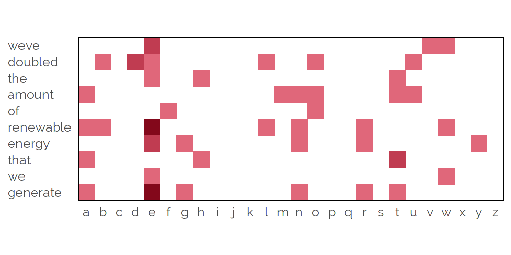 --- <h1 style="font-size: 295%"> Yet Another String Distance</h1> - A string similarity between *K*-word sequences - Let **P** & **Q** be *K* x *L* word-letter matrices - **P** is needle, **Q** is substring of haystack, *L*=26 letters -- 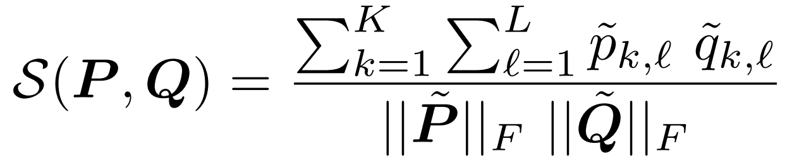 -- <br><br><br><br> - When *L*=1, S(**P**, **Q**) is correlation --- # Haystack #287 <p style="position: absolute; font-size: 125%; top: 20%; left: 10%; width: 50%; text-align: left;"> "... small businesses export more we can create a million new manufacturing jobs the next four years you can make that happen second part of our plan lets control our own energy you know after 30 years of inaction we raised fuel standards set by the middle of the next decade your cars and trucks will go twice as far on the same gallon of gas thats good for your pocketbook it's good for the environment we've doubled our use of renewable energy like wind and solar to today thousands of americans have jobs building wind turbines and longlasting batteries and today the united states is less dependent on..." </p> -- 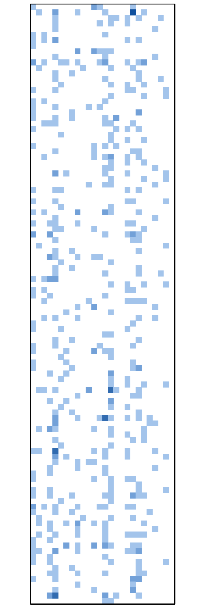 --- -- --- --- --- --- --- <video class="media" preload="auto" onclick="this.play();" style="position: absolute; left: 17%; top: 5%; width: 66%;"> <source src="resources/videos/convolution_combined.mp4" type="video/mp4"/> Your browser does not support the video tag. </video> --- # Identified alignment <p style="font-size: 115%;"> <b>Needle:</b> <br>"<mark style="background-color: #C3384B">We've doubled the amount of renewable energy that we generate</mark>..." </p> <p style="font-size: 115%;"> <b>Haystack:</b> <br> "... small businesses export more we can create a million new manufacturing jobs the next four years you can make that happen second part of our plan lets control our own energy you know after 30 years of inaction we raised fuel standards set by the middle of the next decade your cars and trucks will go twice as far on the same gallon of gas thats good for your pocketbook it's good for the environment <mark style="background-color: #4E84C4"> we've doubled our use of renewable energy like wind and </mark> solar to today thousands of americans have jobs building wind turbines and longlasting batteries and today the united states is less dependent on..." </p> --- # Efficient computation --- # Efficient computation --- # Efficient computation --- # Efficient computation --- 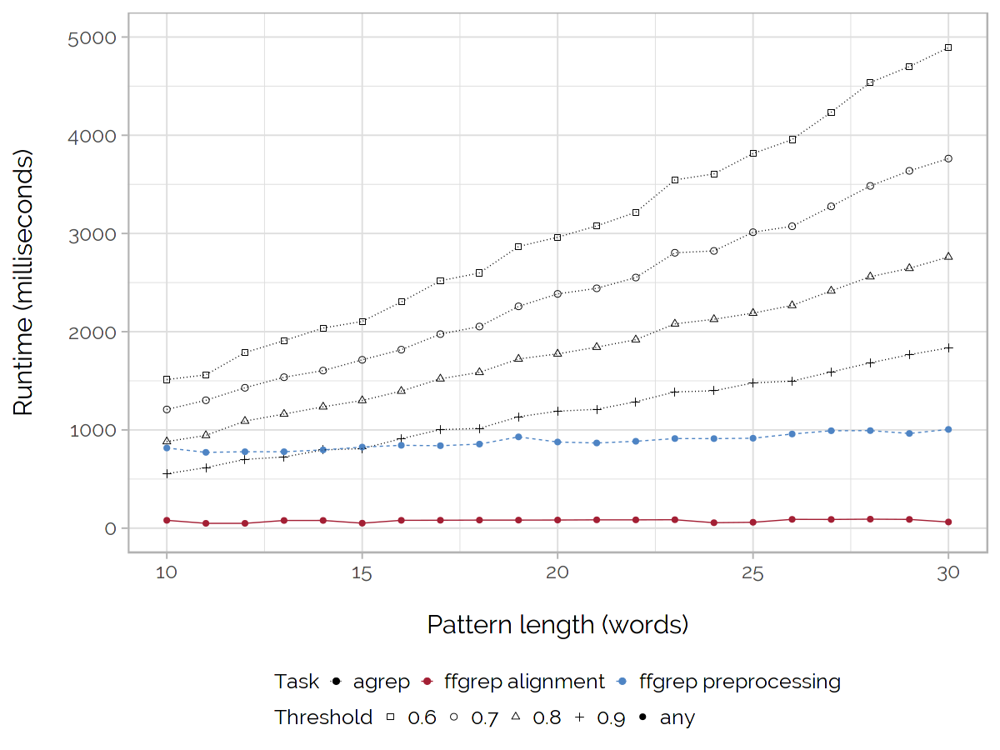 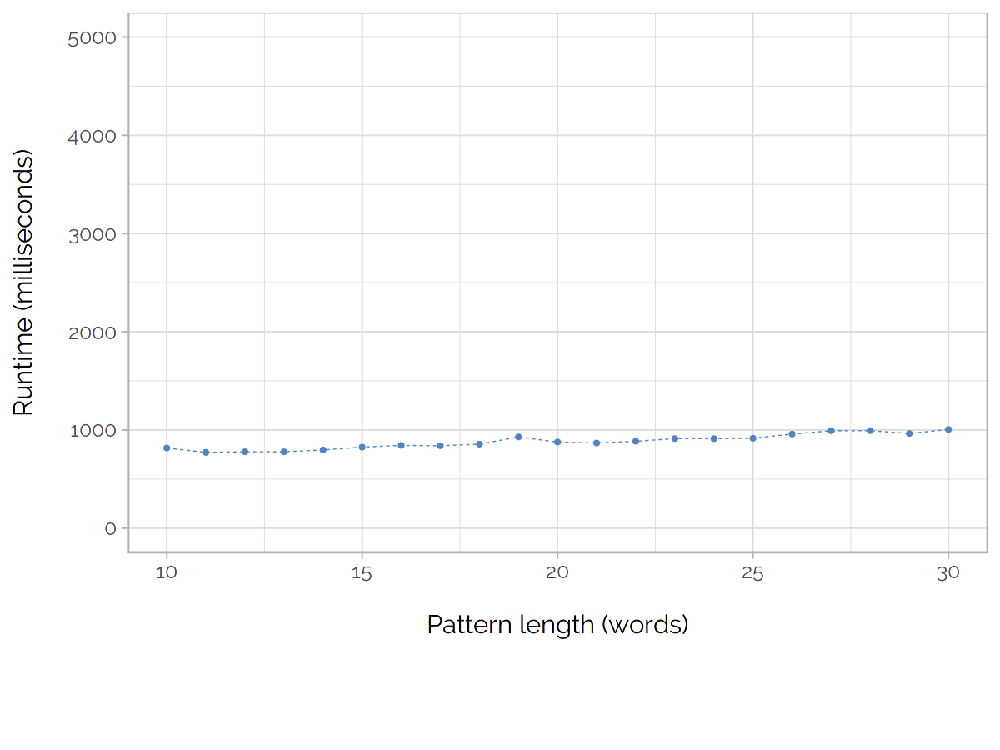 -- 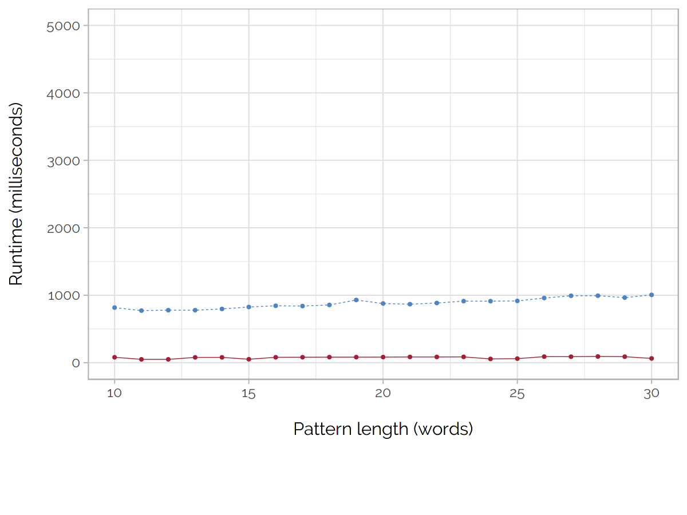 -- 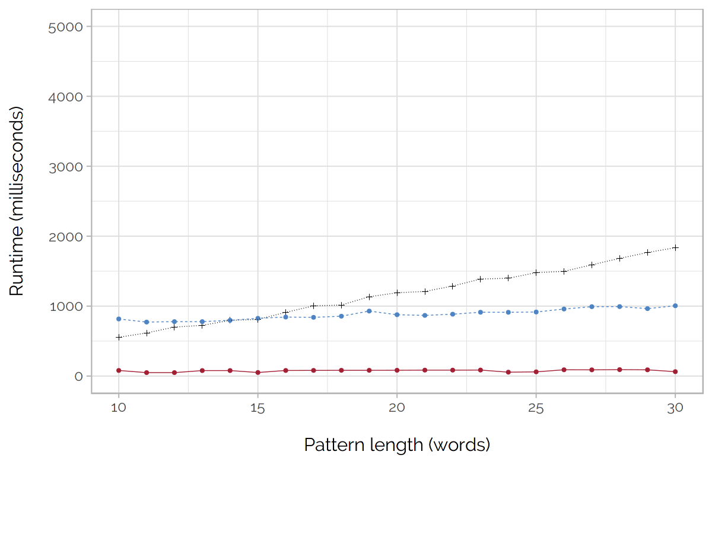 -- 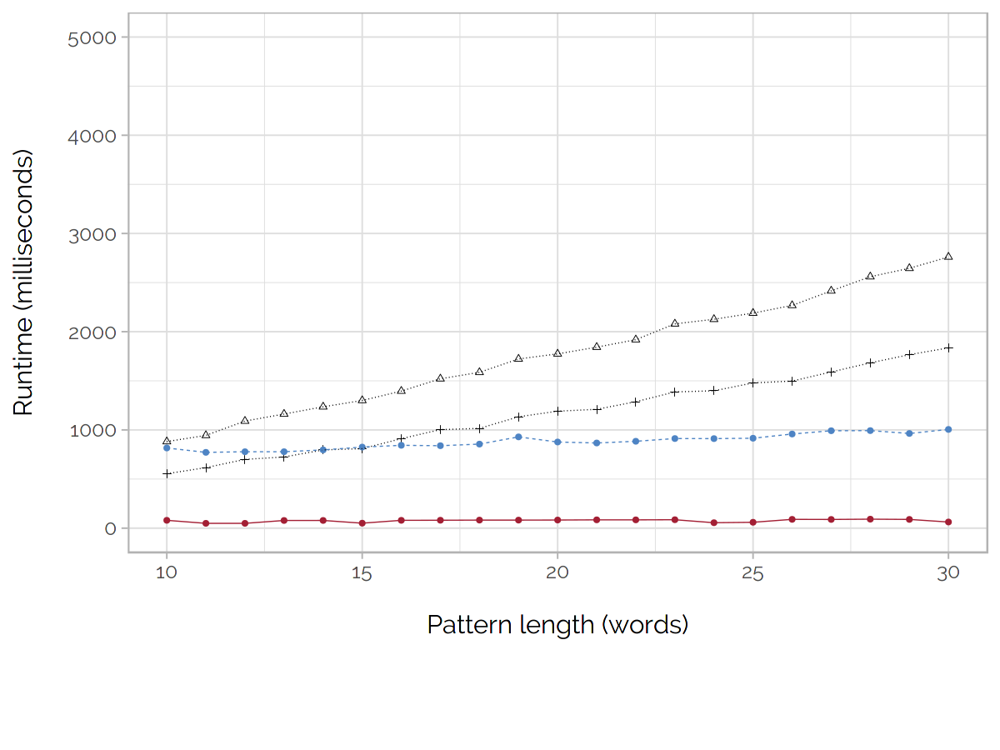 -- 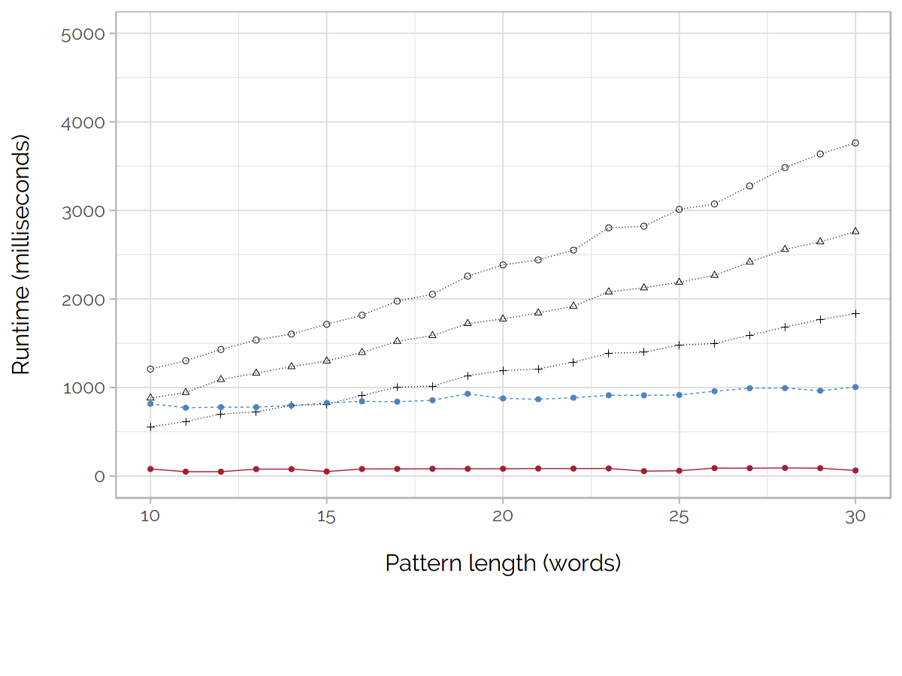 -- --- # Extensions 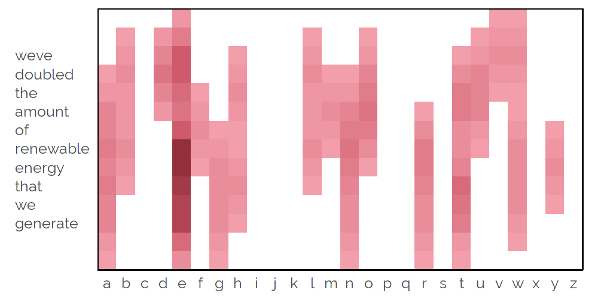 --- # Extensions 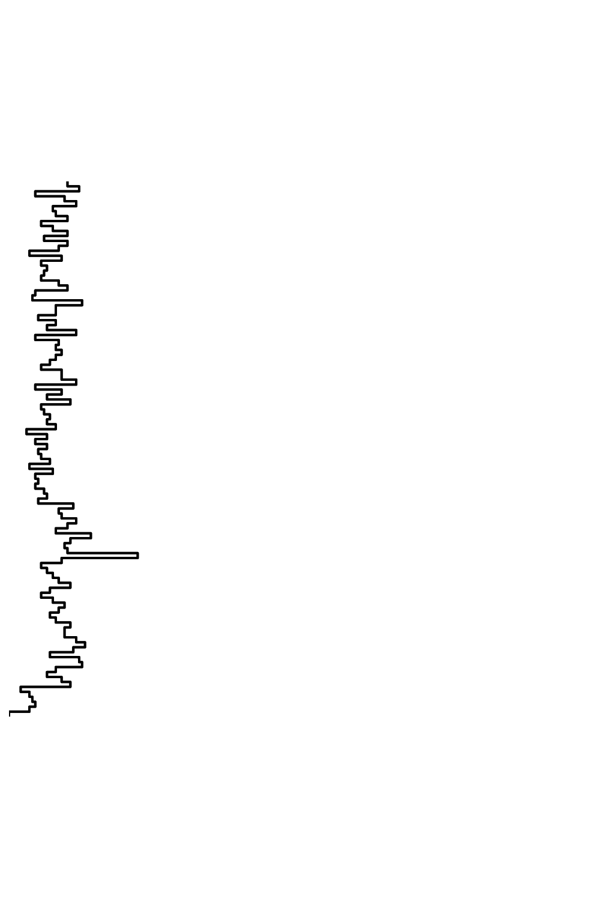 --- # Extensions 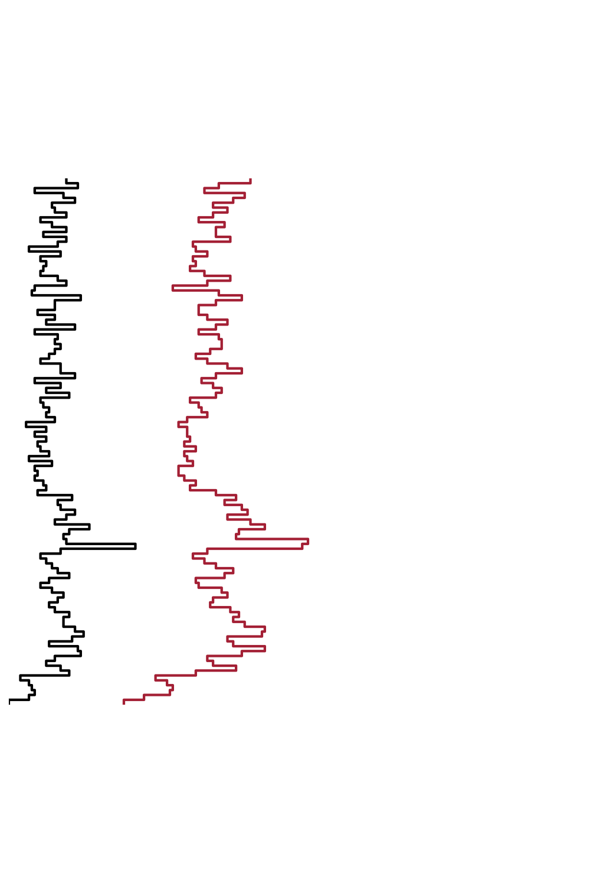 --- # Extensions 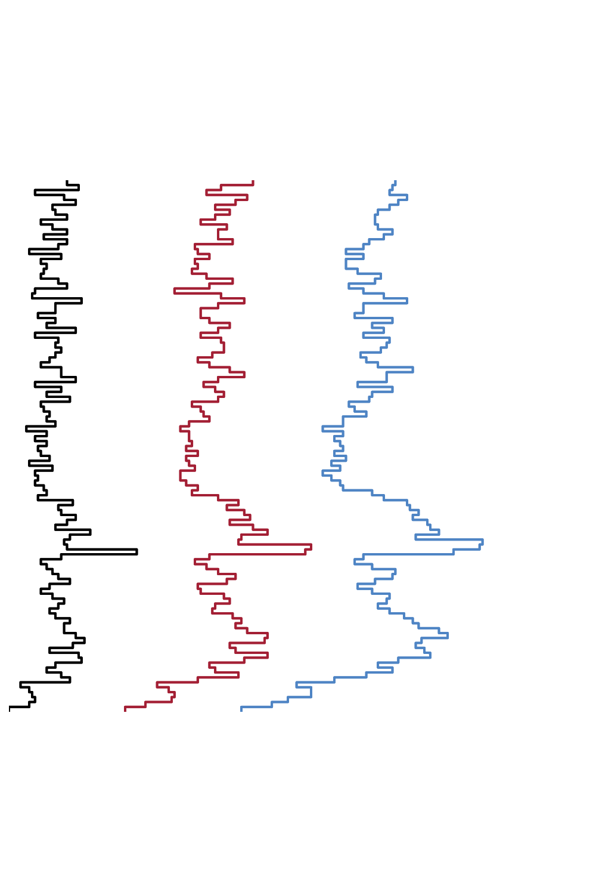 --- # Benchmark - In a comparison with `agrep`, performance is close - Across 50 manually identified catchphrases, <br> `ffgrep` & `agrep` recover closely comparable results - Taking `agrep` as ground truth, for typical params. - Acc. 0.97, prec. 0.91, sens. 0.87, spec. 0.99, F<sub>1</sub> 0.89 - Similar performance across wide range of `agrep` params. --- # The experiment - Cut corpus into 300,000 needles (10 words each) - Search for every needle in each of 100 haystacks - ~90 billion string distance computations - Blur to radius 1, smooth gaps of width 1 -- - Produces a similarity graph on 300,000 vertices - Threshold at arbitrary value -- - Communities in graph represent "catchphrases" -- - Within each speech, identify needles in same community - Take vertex contraction to merge overlapping needles --- 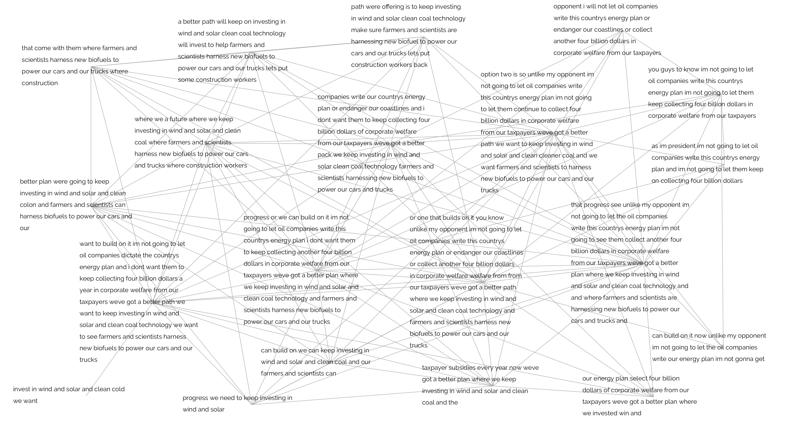 --- --- --- --- <!-- THE END -->